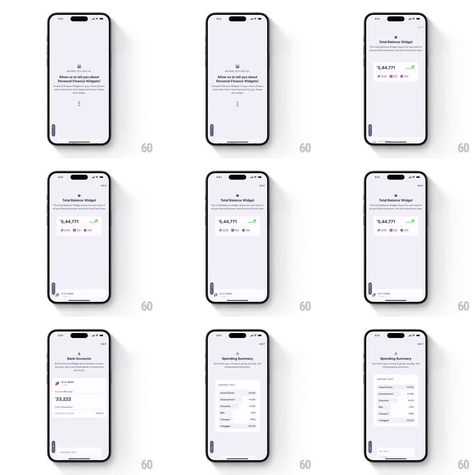

Media
Frame-by-frame

Rebuild this interaction 1:1: Fold's vertical story onboarding - each upward swipe slides the current explainer card up and stacks it as the next card rises: intro, Total Balance Widget (₹5,44,771), Bank Accounts (ICICI ₹23,222), Spending Summary.

Rebuild this interaction 1:1: Fold's vertical story onboarding - each upward swipe slides the current explainer card up and stacks it as the next card rises: intro, Total Balance Widget (₹5,44,771), Bank Accounts (ICICI ₹23,222), Spending Summary. ## Integration Integration: stack-agnostic spec - springs given as stiffness/damping, timed motions as duration + curve; map every value to your framework and animation library of choice. ## Scene Light story cards: "BEFORE YOU DIVE IN" eyebrow, "Allow us to tell you about Personal Finance Widgets!" headline with a double-chevron swipe hint, then widget showcase pages - "Total Balance Widget" with a big ₹5,44,771 figure and trend chips, "Bank Accounts" with an ICICI BANK card showing ₹23,222, "Spending Summary" with category rows (Food & Drinks, Entertainment, ...). SKIP top-right, a small page rail on the left edge. ## Motion spec Pattern: vertical story stack. - Swipe up: current card translates up and scales to ~0.92, dimming ~10%, as the next card rises from below covering it (spring ~300/28, ~350ms) - the stacked edge of the previous card peeks at the top. - New card's content staggers in: headline, then figure/list rows (40ms stagger, fade + 10px rise). - The left rail's active segment grows/advances with each page (200ms). - Down-swipe reverses: top card slides down, previous card un-scales from the stack. - SKIP exits the flow (fade 200ms). ## Calibration - The outgoing card stays visible as a thin stacked strip - that peek sells the pile metaphor. - Direction is vertical only; horizontal swipes do nothing. ## Reduced motion Cards crossfade; no scale/stack. ## Don't miss - Rupee figures use the Indian digit grouping (5,44,771) exactly as designed. - The swipe-hint chevrons loop gently (translateY 4px, 1.2s) until the first swipe.